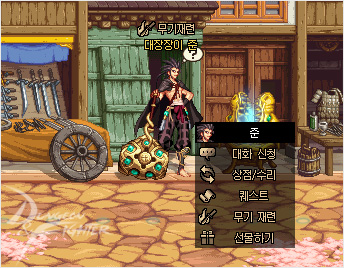
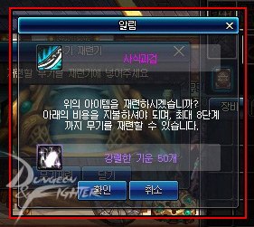
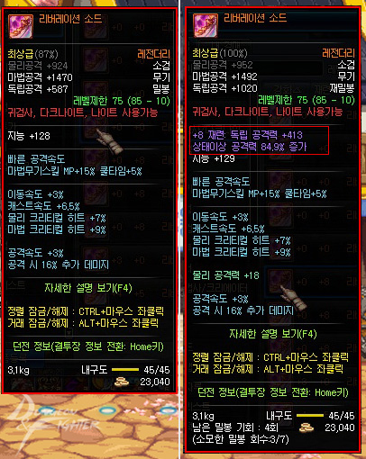

3-2재련
전페이지
다음페이지
1.재련

준이라는 npc한테 가서 재련을 할수있고 8재련이 끝이다
실패시 장비가 터지지도 않고 재련수치가 떨어지지않는다

재련을 할때 들어가는 재료는 강렬한 기운이면된다
강렬한 기운은 수쥬 무투장(황룡/청룡 대회), 조안 페레로의 항해(주간 던전), 길드 던전 상점, 붉은 꼬리 조나단 상점, 쿠룬산 던전에서 획득할 수 있습니다

보통은 독립공격력 캐릭터들이 한다
사진에있는 상태이상 공격력은 사라졌다
홈으로